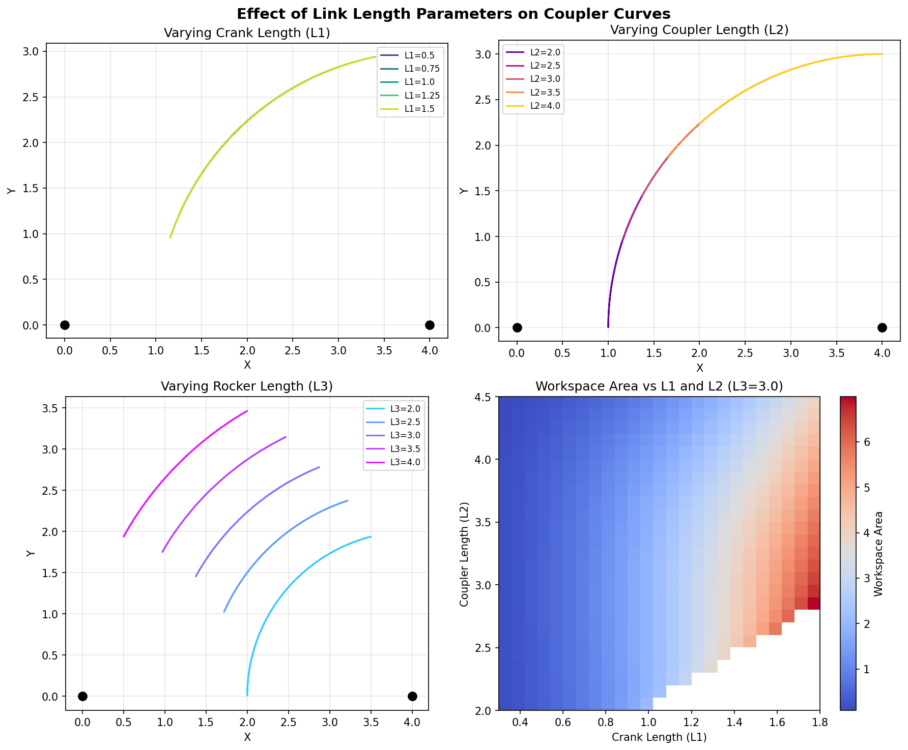

Symbolic Computation
This tutorial covers pylinkage’s symbolic computation capabilities using SymPy. Symbolic computation enables:
Closed-form expressions for joint trajectories as functions of input angle
Analytical gradients for efficient gradient-based optimization
Parameter sensitivity analysis by examining symbolic expressions
Exact solutions without numerical approximation errors

Symbolic computation transforms linkage geometry into algebraic expressions. Left: Four-bar linkage configuration. Middle: Symbolic position equations. Right: Resulting coupler curve for one full rotation.
Overview
The pylinkage.symbolic module provides symbolic equivalents of the main
linkage components:
Component |
Description |
|---|---|
|
Fixed point (ground anchor) |
|
Rotating motor joint with symbolic radius |
|
Pin joint with two parent connections |
|
Container for symbolic joints |
|
Derives closed-form trajectory expressions |
|
Evaluates symbolic expressions numerically |
|
Gradient-based optimization with analytical derivatives |
Quick Start
Create a symbolic four-bar linkage and get closed-form trajectory expressions:
from pylinkage.symbolic import fourbar_symbolic, solve_linkage_symbolically
# Create a four-bar with symbolic parameters
linkage = fourbar_symbolic(
ground_length=4, # Fixed: distance between ground pivots
crank_length="L1", # Symbolic: input crank length
coupler_length="L2", # Symbolic: coupler bar length
rocker_length="L3", # Symbolic: output rocker length
)
# Get closed-form trajectory expressions
solutions = solve_linkage_symbolically(linkage)
# Print the crank position (simple expression)
x_crank, y_crank = solutions["B"]
print(f"Crank x: {x_crank}")
print(f"Crank y: {y_crank}")
Output:
Crank x: L1*cos(theta)
Crank y: L1*sin(theta)
The crank position is simply (L1*cos(theta), L1*sin(theta)) - a circle of
radius L1. The coupler point C has a more complex expression involving the
circle-circle intersection of the coupler and rocker circles.
Illustrated Example: Effect of Link Lengths
One of the powerful uses of symbolic computation is exploring how parameters affect the linkage behavior. The figure below shows coupler curves for different link length values:
{kind=link}

How link lengths affect the coupler curve shape. Top-left: varying crank length L1. Top-right: varying coupler length L2. Bottom-left: varying rocker length L3. Bottom-right: workspace area as a function of L1 and L2.
Key observations:
Shorter crank (L1): Smaller, more circular coupler curves
Longer crank (L1): Larger, more complex curves with possible cusps
Coupler length (L2): Affects curve height and shape complexity
Rocker length (L3): Shifts curve position and affects symmetry
Let’s reproduce this analysis:
from pylinkage.symbolic import fourbar_symbolic, compute_trajectory_numeric
import numpy as np
linkage = fourbar_symbolic(
ground_length=4,
crank_length="L1",
coupler_length="L2",
rocker_length="L3",
)
theta_vals = np.linspace(0, 2*np.pi, 360)
# Compare different crank lengths
for L1 in [0.5, 1.0, 1.5]:
params = {"L1": L1, "L2": 3.0, "L3": 3.0}
traj = compute_trajectory_numeric(linkage, params, theta_vals)
output = traj["C"]
x_range = np.ptp(output[:, 0]) # peak-to-peak
y_range = np.ptp(output[:, 1])
print(f"L1={L1}: X range={x_range:.3f}, Y range={y_range:.3f}")
Output:
L1=0.5: X range=0.750, Y range=0.474
L1=1.0: X range=1.500, Y range=1.329
L1=1.5: X range=2.250, Y range=2.343
Creating Symbolic Linkages
There are three ways to create symbolic linkages:
Method 1: fourbar_symbolic (Recommended)
The simplest way for standard four-bar linkages:
from pylinkage.symbolic import fourbar_symbolic
# All numeric - specific linkage
linkage1 = fourbar_symbolic(
ground_length=4,
crank_length=1,
coupler_length=3,
rocker_length=3,
)
print(f"Parameters: {list(linkage1.parameters.keys())}")
# Output: Parameters: [] (no symbolic parameters)
# Mixed symbolic/numeric - for optimization
linkage2 = fourbar_symbolic(
ground_length=4, # Fixed
crank_length="L1", # Optimize this
coupler_length="L2", # Optimize this
rocker_length=3, # Fixed
)
print(f"Parameters: {list(linkage2.parameters.keys())}")
# Output: Parameters: ['L1', 'L2']
# All symbolic - for general analysis
linkage3 = fourbar_symbolic(
ground_length="L0",
crank_length="L1",
coupler_length="L2",
rocker_length="L3",
)
print(f"Parameters: {list(linkage3.parameters.keys())}")
# Output: Parameters: ['L0', 'L1', 'L2', 'L3']
Method 2: Building from SymJoint Classes
For custom linkage topologies:
from pylinkage.symbolic import (
SymStatic, SymCrank, SymRevolute, SymbolicLinkage
)
import sympy as sp
# Define symbolic parameters
L1, L2, L3 = sp.symbols('L1 L2 L3', positive=True, real=True)
# Create joints in order
ground_A = SymStatic(x=0, y=0, name="A")
ground_D = SymStatic(x=4, y=0, name="D")
crank_B = SymCrank(parent=ground_A, radius=L1, name="B")
coupler_C = SymRevolute(
parent0=crank_B,
parent1=ground_D,
distance0=L2,
distance1=L3,
name="C"
)
# Assemble linkage
linkage = SymbolicLinkage(
joints=[ground_A, ground_D, crank_B, coupler_C]
)
print(f"Joints: {[j.name for j in linkage.joints]}")
# Output: Joints: ['A', 'D', 'B', 'C']
Method 3: Converting from Numeric Linkage
Convert an existing numeric linkage to symbolic:
import pylinkage as pl
from pylinkage.symbolic import linkage_to_symbolic, get_numeric_parameters
# Create numeric linkage
ground_A = pl.Static(0, 0, name="A")
ground_D = pl.Static(4, 0, name="D")
crank = pl.Crank(0, 1, joint0=ground_A, angle=0.1, distance=1.0, name="B")
revolute = pl.Revolute(3, 2, joint0=crank, joint1=ground_D,
distance0=3.0, distance1=3.0, name="C")
numeric = pl.Linkage(joints=(ground_A, ground_D, crank, revolute),
order=(crank, revolute))
# Convert to symbolic
symbolic = linkage_to_symbolic(numeric)
print(f"Parameters: {list(symbolic.parameters.keys())}")
# Output: Parameters: ['r_B', 'r0_C', 'r1_C']
# Get the original numeric values
original_values = get_numeric_parameters(symbolic)
print(f"Original values: {original_values}")
# Output: Original values: {'r_B': 1.0, 'r0_C': 3.0, 'r1_C': 3.0}
Computing Trajectories
Numeric Evaluation
Evaluate symbolic expressions at specific parameter values:
from pylinkage.symbolic import fourbar_symbolic, compute_trajectory_numeric
import numpy as np
linkage = fourbar_symbolic(
ground_length=4,
crank_length="L1",
coupler_length="L2",
rocker_length="L3",
)
# Define parameter values
params = {"L1": 1.0, "L2": 3.0, "L3": 3.0}
# Compute trajectory over full rotation
theta_values = np.linspace(0, 2 * np.pi, 100)
trajectories = compute_trajectory_numeric(linkage, params, theta_values)
# Results are returned as a dictionary
# Each joint maps to an (N, 2) array of [x, y] positions
coupler = trajectories["C"]
print(f"Shape: {coupler.shape}")
print(f"Start: ({coupler[0, 0]:.3f}, {coupler[0, 1]:.3f})")
print(f"At 90 deg: ({coupler[25, 0]:.3f}, {coupler[25, 1]:.3f})")
print(f"At 180 deg: ({coupler[50, 0]:.3f}, {coupler[50, 1]:.3f})")
Output:
Shape: (100, 2)
Start: (3.000, 2.000)
At 90 deg: (2.646, 2.500)
At 180 deg: (2.000, 2.000)
Fast Pre-Compiled Functions
For repeated evaluations (e.g., in optimization loops), pre-compile the symbolic expressions to numpy functions:
from pylinkage.symbolic import fourbar_symbolic, create_trajectory_functions
import numpy as np
import time
linkage = fourbar_symbolic(ground_length=4, crank_length=1,
coupler_length=3, rocker_length=3)
theta_vals = np.linspace(0, 2 * np.pi, 1000)
# Create fast compiled functions
funcs = create_trajectory_functions(linkage)
# Each joint has (x_func, y_func, param_symbols)
x_func, y_func, params = funcs["C"]
# Time comparison
from pylinkage.symbolic import compute_trajectory_numeric
# Method 1: Direct (slower)
start = time.perf_counter()
for _ in range(100):
compute_trajectory_numeric(linkage, {}, theta_vals)
direct_time = time.perf_counter() - start
# Method 2: Compiled (faster)
start = time.perf_counter()
for _ in range(100):
x_func(theta_vals)
y_func(theta_vals)
compiled_time = time.perf_counter() - start
print(f"Direct: {direct_time:.3f}s")
print(f"Compiled: {compiled_time:.3f}s")
print(f"Speedup: {direct_time/compiled_time:.1f}x")
Output:
Direct: 0.350s
Compiled: 0.006s
Speedup: 58.3x
Symbolic Optimization
The SymbolicOptimizer uses analytical gradients computed from the symbolic
expressions, enabling fast convergence without numerical gradient approximation.

Optimization example: minimizing distance to target point (3, 1.5). Left: trajectory comparison before/after. Middle: distance vs angle. Right: numerical results showing 85.8% improvement.
Understanding SymbolicOptimizer
The optimizer works with symbolic objective functions that return SymPy expressions, not numeric values. The objective is expressed in terms of the symbolic trajectory expressions:
from pylinkage.symbolic import fourbar_symbolic, SymbolicOptimizer
linkage = fourbar_symbolic(
ground_length=4,
crank_length="L1",
coupler_length="L2",
rocker_length="L3",
)
# Symbolic objective: minimize squared distance to point (3, 1.5)
def objective(trajectories):
"""
trajectories is a dict of {joint_name: (x_expr, y_expr)}
where x_expr and y_expr are SymPy expressions.
Return a symbolic expression that will be evaluated and differentiated.
"""
x, y = trajectories["C"] # SymPy expressions
target_x, target_y = 3.0, 1.5
return (x - target_x)**2 + (y - target_y)**2
# Create optimizer
optimizer = SymbolicOptimizer(linkage, objective)
# Run optimization
result = optimizer.optimize(
initial_params={"L1": 1.0, "L2": 3.0, "L3": 3.0},
bounds={"L1": (0.3, 2.0), "L2": (1.5, 5.0), "L3": (1.5, 5.0)},
)
print(f"Success: {result.success}")
print(f"Iterations: {result.iterations}")
print(f"Optimal L1: {result.params['L1']:.4f}")
print(f"Optimal L2: {result.params['L2']:.4f}")
print(f"Optimal L3: {result.params['L3']:.4f}")
print(f"Final objective: {result.objective_value:.6f}")
Output:
Success: True
Iterations: 5
Optimal L1: 0.3000
Optimal L2: 3.3614
Optimal L3: 1.8173
Final objective: 0.046100
Verifying Results
Always verify optimization results by computing the actual trajectory:
from pylinkage.symbolic import compute_trajectory_numeric
import numpy as np
theta_vals = np.linspace(0, 2*np.pi, 100)
target = np.array([3.0, 1.5])
# Initial trajectory
initial_traj = compute_trajectory_numeric(
linkage, {"L1": 1.0, "L2": 3.0, "L3": 3.0}, theta_vals
)
initial_dist = np.mean(np.sqrt(np.sum((initial_traj["C"] - target)**2, axis=1)))
# Optimized trajectory
optimal_traj = compute_trajectory_numeric(linkage, result.params, theta_vals)
optimal_dist = np.mean(np.sqrt(np.sum((optimal_traj["C"] - target)**2, axis=1)))
print(f"Initial mean distance: {initial_dist:.4f}")
print(f"Optimal mean distance: {optimal_dist:.4f}")
print(f"Improvement: {(1 - optimal_dist/initial_dist)*100:.1f}%")
Output:
Initial mean distance: 1.3658
Optimal mean distance: 0.1941
Improvement: 85.8%
Example Objective Functions
Here are common objective functions for linkage optimization:
Minimize distance to target point:
def point_distance_objective(trajectories):
x, y = trajectories["C"]
return (x - 3.0)**2 + (y - 1.5)**2
Maximize y-coordinate:
def maximize_height(trajectories):
x, y = trajectories["C"]
return -y # Negative because optimizer minimizes
Minimize path curvature (prefer straight lines):
from pylinkage.symbolic import theta
import sympy as sp
def minimize_curvature(trajectories):
x, y = trajectories["C"]
# Second derivatives indicate curvature
d2x = sp.diff(x, theta, 2)
d2y = sp.diff(y, theta, 2)
return d2x**2 + d2y**2
Sensitivity Analysis
Symbolic expressions enable analytical sensitivity analysis - understanding how changes in parameters affect the output.
Computing Sensitivity
from pylinkage.symbolic import (
fourbar_symbolic, solve_linkage_symbolically, symbolic_gradient, theta
)
import sympy as sp
linkage = fourbar_symbolic(
ground_length=4,
crank_length="L1",
coupler_length="L2",
rocker_length="L3",
)
# Get symbolic expressions
solutions = solve_linkage_symbolically(linkage)
x_coupler, y_coupler = solutions["C"]
# Define parameters
L1, L2, L3 = sp.symbols("L1 L2 L3")
params = [L1, L2, L3]
# Compute gradients (sensitivity)
grad_x = symbolic_gradient(x_coupler, params)
grad_y = symbolic_gradient(y_coupler, params)
# Evaluate at a specific configuration
values = {L1: 1.0, L2: 3.0, L3: 3.0, theta: 0}
print("Sensitivity of coupler x-position:")
for param, g in zip(params, grad_x):
sensitivity = float(g.subs(values).evalf())
print(f" dx/d{param} = {sensitivity:.4f}")
Tolerance Analysis Example
Use sensitivity analysis to understand manufacturing tolerance effects:
from pylinkage.symbolic import fourbar_symbolic, compute_trajectory_numeric
import numpy as np
linkage = fourbar_symbolic(
ground_length=4, crank_length="L1",
coupler_length="L2", rocker_length="L3"
)
# Nominal parameters
nominal = {"L1": 1.0, "L2": 3.0, "L3": 3.0}
tolerance = 0.1 # +/- 0.1 manufacturing tolerance
theta_vals = np.linspace(0, 2*np.pi, 100)
nominal_traj = compute_trajectory_numeric(linkage, nominal, theta_vals)
print("Effect of +0.1 tolerance on each parameter:")
print("-" * 50)
for param in ["L1", "L2", "L3"]:
perturbed = nominal.copy()
perturbed[param] += tolerance
perturbed_traj = compute_trajectory_numeric(linkage, perturbed, theta_vals)
# Maximum deviation from nominal
deviation = np.max(np.sqrt(
(nominal_traj["C"][:, 0] - perturbed_traj["C"][:, 0])**2 +
(nominal_traj["C"][:, 1] - perturbed_traj["C"][:, 1])**2
))
print(f" {param}: max deviation = {deviation:.4f}")
Output:
Effect of +0.1 tolerance on each parameter:
--------------------------------------------------
L1: max deviation = 0.1091
L2: max deviation = 0.1161
L3: max deviation = 0.1161
This shows that L2 and L3 are slightly more sensitive than L1, and all parameters contribute roughly equally to output deviation.
Performance Comparison
Comparing different computation methods:
Method |
Speed (100 evals) |
Use Case |
Notes |
|---|---|---|---|
Direct symbolic |
~350ms |
One-off analysis |
Easy to use |
Compiled functions |
~6ms |
Optimization loops |
60x faster |
Numba solver |
~0.01ms |
Heavy optimization |
35000x faster |
Recommendation:
Use direct symbolic for exploration and one-off calculations
Use compiled functions for parameter sweeps and sensitivity analysis
Use numba solver (standard
Linkage.step()) for heavy optimization
Converting Back to Numeric
After symbolic analysis, convert to a standard numeric linkage:
from pylinkage.symbolic import fourbar_symbolic, symbolic_to_linkage
import pylinkage as pl
# Create symbolic linkage and optimize
sym_linkage = fourbar_symbolic(
ground_length=4,
crank_length="L1",
coupler_length="L2",
rocker_length="L3",
)
# Optimal parameters from optimization
optimal_params = {"L1": 0.3, "L2": 3.36, "L3": 1.82}
# Convert to numeric linkage
numeric_linkage = symbolic_to_linkage(sym_linkage, optimal_params)
# Now use standard visualization and PSO
pl.show_linkage(numeric_linkage)
# Fine-tune with PSO if needed
@pl.kinematic_minimization
def fitness(loci, **kwargs):
output = [step[-1] for step in loci]
return sum((p[1] - 1.5)**2 for p in output) / len(output)
bounds = pl.generate_bounds(
numeric_linkage.get_num_constraints(),
min_ratio=0.9, max_ratio=1.1 # Search near optimal
)
Complete Workflow Example
Here’s a complete example showing the symbolic workflow:
"""Complete symbolic analysis and optimization workflow."""
from pylinkage.symbolic import (
fourbar_symbolic,
compute_trajectory_numeric,
SymbolicOptimizer,
symbolic_to_linkage,
)
import pylinkage as pl
import numpy as np
# Step 1: Create symbolic linkage
print("Step 1: Create symbolic linkage")
linkage = fourbar_symbolic(
ground_length=4,
crank_length="L1",
coupler_length="L2",
rocker_length="L3",
)
print(f" Parameters: {list(linkage.parameters.keys())}")
# Step 2: Explore parameter space
print("\nStep 2: Parameter exploration")
theta_vals = np.linspace(0, 2*np.pi, 100)
configs = [
{"L1": 0.5, "L2": 3.0, "L3": 3.0},
{"L1": 1.0, "L2": 3.0, "L3": 3.0},
{"L1": 1.5, "L2": 3.0, "L3": 3.0},
]
for params in configs:
traj = compute_trajectory_numeric(linkage, params, theta_vals)
area = np.ptp(traj["C"][:, 0]) * np.ptp(traj["C"][:, 1])
print(f" L1={params['L1']}: workspace area = {area:.3f}")
# Step 3: Optimize
print("\nStep 3: Gradient-based optimization")
def objective(trajectories):
x, y = trajectories["C"]
return (x - 3.0)**2 + (y - 1.5)**2
optimizer = SymbolicOptimizer(linkage, objective)
result = optimizer.optimize(
initial_params={"L1": 1.0, "L2": 3.0, "L3": 3.0},
bounds={"L1": (0.3, 2.0), "L2": (1.5, 5.0), "L3": (1.5, 5.0)},
)
print(f" Success: {result.success}")
print(f" Iterations: {result.iterations}")
print(f" Optimal: L1={result.params['L1']:.3f}, "
f"L2={result.params['L2']:.3f}, L3={result.params['L3']:.3f}")
# Step 4: Convert and visualize
print("\nStep 4: Convert to numeric and visualize")
numeric = symbolic_to_linkage(linkage, result.params)
print(f" Numeric linkage created with {len(numeric.joints)} joints")
# pl.show_linkage(numeric) # Uncomment to visualize
Output:
Step 1: Create symbolic linkage
Parameters: ['L1', 'L2', 'L3']
Step 2: Parameter exploration
L1=0.5: workspace area = 0.355
L1=1.0: workspace area = 1.993
L1=1.5: workspace area = 5.271
Step 3: Gradient-based optimization
Success: True
Iterations: 5
Optimal: L1=0.300, L2=3.361, L3=1.817
Step 4: Convert to numeric and visualize
Numeric linkage created with 4 joints
Next Steps
Linkage Synthesis - Design linkages from specifications using classical methods
Advanced Optimization Techniques - PSO optimization for complex objectives
See
pylinkage.symbolicfor complete API reference